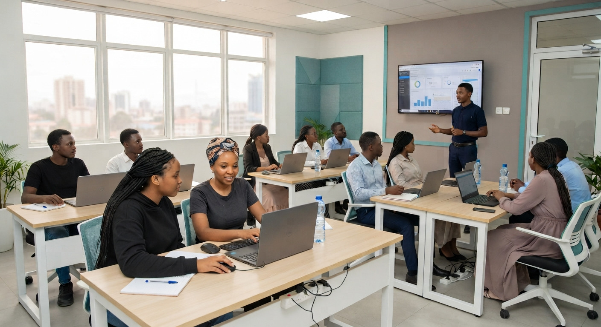

01
Communication
Finding your voice, expressing ideas clearly, listening actively and communicating with different people and audiences.
A young person can have talent and still need the practical skills, discipline, confidence and knowledge to turn that talent into something they can build with.

Someone may know how to dance, sing, draw, write, perform or create. But developing that ability into a sustainable pathway requires more than natural ability.
It takes communication. Collaboration. Problem-solving. Digital confidence. Professional discipline. Financial awareness. The ability to present your work, understand an opportunity and keep learning after the first opportunity is over.
CoWiTa sees skills development as the bridge between what a young person already has and what that ability could become.
CoWiTa's work begins with the strengths young people already carry. Skills development then adds the tools that help those strengths become useful, adaptable and purposeful.
We want a young person to leave a learning experience with more than something they can say they attended. The goal is greater confidence in what they can do, clearer understanding of how they can use it, and a stronger foundation for the next step.
That may eventually mean creating work, joining a team, starting something of their own, serving their community or pursuing a professional creative pathway.
Skills development at CoWiTa is designed to connect creative ability with the practical capabilities young people need to create, collaborate and pursue opportunity.
Finding your voice, expressing ideas clearly, listening actively and communicating with different people and audiences.
Building practical confidence with digital tools that can support learning, creativity, collaboration and opportunity.
Developing reliability, discipline, preparation, teamwork and the habits required to turn ideas into completed work.
Learning to experiment, adapt, think critically and find new ways to respond when the first idea does not work.
Understanding how an ability can create value, solve a problem and potentially become a sustainable opportunity.
Building confidence, self-awareness, resilience and the mindset to keep learning as circumstances and opportunities change.
Understand strengths, interests and the direction a young person wants to explore.
Build practical knowledge and foundational skills through guided learning.
Apply what has been learned through projects, collaboration and real creative work.
Turn skills into work that can be shared, refined and developed further.
Build relationships with mentors, peers, collaborators and potential opportunities.
Continue developing the ability to create value and pursue meaningful opportunities.
Use stronger creative, technical and communication skills to turn ideas into work that can be experienced and shared.
Learn how to contribute to teams, communicate clearly and build alongside people with different strengths.
Develop the confidence to identify opportunities and understand what skills or preparation they require.
Explore how creative and practical abilities can become projects, services, enterprises or community initiatives.
Treat skill development as a continuing process rather than something that ends when a workshop or programme finishes.
Use developed abilities not only for personal growth, but to contribute to families, communities and wider society.
CoWiTa is developing the next stage of its skills-development work around practical learning, creative practice, mentorship and pathways toward opportunity.